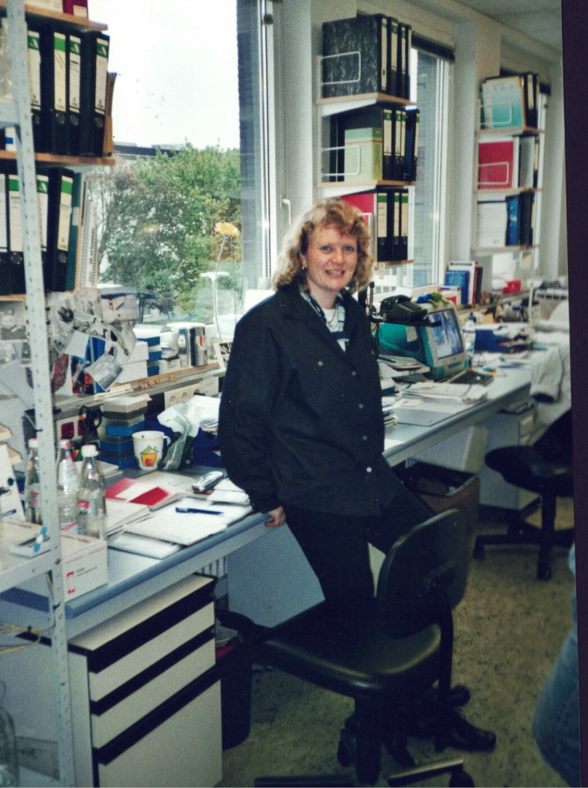

Angelika Eggert kenne ich seit vielen Jahren. Kennengelernt habe ich sie in Essen. Sie hatte dort Medizin studiert und anschließend eine Doktorarbeit auf dem Gebiet der Molekularbiologie angefertigt. Die wissenschaftliche Arbeit gefiel ihr so gut, dass sie auch danach weiterforschen wollte. Zugleich zog es sie in die Pädiatrie. Sie bewarb sich bei Werner Havers an der Essener Kinderklinik.
Havers leitete damals die Abteilung, sein Oberarzt war Bernhard Kremens, von dem an anderer Stelle noch die Rede sein wird. Kremens beschäftigte sich mit dem Neuroblastom. Im Jahr 1994 veranstaltete Manfred Schwab, bei dem ich von 1987 bis 1988 arbeitete, in Heidelberg einen internationalen Neuroblastom-Kongress. Kremens fuhr hin und nahm Angelika mit. Für sie war es eine der ersten Gelegenheiten, Kongressluft zu schnuppern und die führenden Leute auf diesem Gebiet kennenzulernen.
Zu ihnen gehörte Garrett Brodeur vom Children’s Hospital of Philadelphia, einer der damaligen Hochburgen der Neuroblastomforschung. Dort arbeitete auch die legendäre Audrey Evans. Sie hatte sich um die Erforschung und Behandlung des Neuroblastoms große Verdienste erworben und unter anderem eine Stadieneinteilung entwickelt, die für die Wahl der Behandlung essentiell war.
Angelika stand dabei, als Bernhard Kremens mit Garrett Brodeur ins Gespräch kam. Sie lauschte der Unterhaltung mit einer Mischung aus Staunen, Ehrfurcht und Überraschung. Letztere nahm noch zu, als Kremens Brodeur mitteilte, Angelika Eggert hätte vielleicht Interesse daran, als Stipendiatin zu ihm nach Philadelphia zu kommen. Mit Angelika selbst hatte er darüber vorher nicht gesprochen.
Brodeur reagierte ausgesprochen unkompliziert. Er habe ein neues Labor und nehme gern Stipendiaten auf. Angelika solle sich ein Stipendium besorgen, dann könne sie zu ihm kommen. So schnell konnte das gehen. Angelika war zunächst ziemlich überrascht, stellte dann aber tatsächlich bei der Deutschen Krebshilfe einen Antrag auf ein Auslandsstipendium. Sie bestand das Auswahlverfahren. Der Antrag wurde bewilligt. Auf dem Rückweg von der Begutachtung wurde ihr erst bewusst, worauf sie sich eingelassen hatte. Für einen Moment zweifelte sie an ihrer Entscheidung. Dann fand sie, dass sie diese Herausforderung nun auch annehmen müsse, und ging nach Philadelphia.
Ihre wissenschaftliche Arbeit kam dort gut voran. Angeregt durch einen Besuch von Judah Folkman, den in Harvard tätigen „Angiogenese-Papst“, griff sie neben anderen molekularen Fragestellungen die Angiogeneseforschung für das Neuroblastom auf und untersuchte vor allem die Bedeutung von Angiogenesefaktoren.

Nach ihrer Rückkehr vollendete sie ihre Ausbildung zur Kinderärztin in Essen, habilitierte sich und wurde Oberärztin. Dann verließ Thomas Voit, Leiter des Bereichs Neonatologie / Neuropädiatrie, abrupt die Klinik. Er hatte ein attraktives Angebot aus Paris erhalten. Nun wurde kurzfristig eine kommissarische Leitung gebraucht. Auf diese Weise wurde Angelika, mehr oder weniger freiwillig, kommissarische Leiterin der Abteilung.
Sie tat anschließend das, was auch ich getan hatte, und bewarb sich auf Lehrstühle für Pädiatrische Onkologie und Hämatologie. In Essen hatte sie inzwischen auch eine leitende Funktion als Comprehensive Cancer Center Direktorin im Westdeutschen Tumorzentrum übernommen. Es war deshalb nur eine Frage der Zeit, wann sie einen Ruf erhalten würde. Schließlich hatte sie mehrere Angebote und entschied sich dafür, in Essen zu bleiben. Dort übernahm sie als Nachfolgerin von Werner Havers die Leitung der Kinderonkologie. In Essen bildete sie viele qualifizierter Mitarbeiter aus, darunter Johannes Schulte, Kristian Pajtler, Anton Henssen und Annette Künkele. Alle erhielten später leitende Positionen in der Kinderonkologie.
Angelika war sowohl klinisch als auch wissenschaftlich sehr erfolgreich. Zu ihrer Entwicklung in der molekularen Neuroblastomforschung hatte auch eine Geschichte beigetragen, die einige Jahre zuvor in Wilsede in der Lüneburger Heide begonnen hatte. Dort trafen sich die überwiegend jüngeren pädiatrischen Onkologen, um ihre wissenschaftlichen Arbeiten vorzustellen und miteinander zu diskutieren. Ich nahm ebenfalls an dieser Tagung teil. Durch meine frühere Zusammenarbeit mit Manfred Schwab und meine Bekanntschaft mit Angelika wusste ich, welches Potenzial in der Neuroblastomforschung vorhanden war. Außerdem brachte ich die DNA-Chip-Technologie beziehungsweise zumindest die Anregung dazu mit.
Ich schlug deshalb eine gemeinsame Verbundforschung zum Neuroblastom vor. Die Idee wurde in Wilsede aufgegriffen und später in das Nationale Genomforschungsnetz, das NGFN, eingebracht, an dessen Aufbau ich zunächst beteiligt war. Dann wechselte ich nach Göttingen. Manfred Schwab und Angelika Eggert stellten gemeinsam einen Antrag für Neuroblastomforschung unter dem Dach des NGFN und übernahmen die Sprecherfunktion für den Bereich Neuroblastom. Für Angelika war dies der erste in einer Reihe erfolgreicher Verbundforschungsanträge und Grundlage zur Weiterentwicklung der molekularen Neuroblastomforschung.
Während ihrer Essener Zeit erhielt sie überraschend einen Anruf aus der Charité. Dort war nach der Emeritierung von Günter Hentze die Leitung der Kinderonkologie neu zu besetzen. Das bisherige Berufungsverfahren hatte zu keinem befriedigenden Ergebnis geführt. Deshalb entstand in der Berufungskommission der Vorschlag, bereits berufene Ordinarien direkt anzusprechen. Eine der Angesprochenen war Angelika Eggert.
Sie nahm das Angebot an und wechselte 2013 an die Charité. Dort leitete sie die Klinik für Pädiatrie mit Schwerpunkt Onkologie und Hämatologie und setzte ihre erfolgreiche wissenschaftliche Arbeit fort. Hedwig Deubzer, die zuvor bei mir in Göttingen gearbeitet und gelernt hatte, kam mit ihrer Arbeitsgruppe aus Heidelberg dazu und unterstützte den Ausbau von Klinik und Forschung.
Zwölf Jahre später kam ein Anruf aus Essen. Dieses Mal wurde eine neue Ärztliche Direktorin und Vorstandsvorsitzende für die Universitätsmedizin gesucht. Angelika beendete ihre Tätigkeit als Klinikdirektorin und kehrte im Juni 2025 nach Essen zurück, nun an die Spitze des gesamten Klinikums.
Wenn ich ihren Weg heute an mir vorbeiziehen lasse, fallen mir einige Ähnlichkeiten mit meinem eigenen auf. Auch meine Laufbahn verlief nicht immer so, wie sie sich im Voraus hätte planen lassen. Gelegentlich ergab sich unerwartet eine Möglichkeit, und dann musste man entscheiden, ob man sie ergriff. Bei Angelika war es ähnlich. Nur dass ihre erste große Möglichkeit von Bernhard Kremens auf einem Kongress verkündet wurde, bevor sie selbst etwas davon wusste.